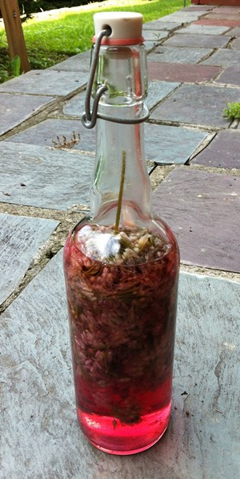
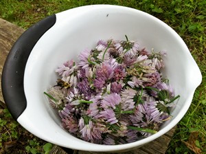
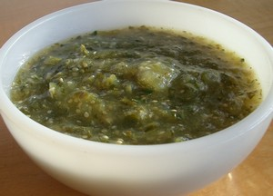
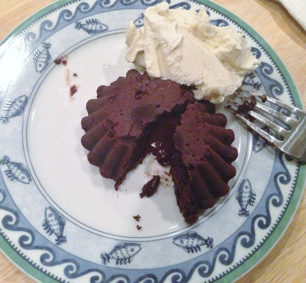

Nav
Menu
Recipe for Chive Blossom Vinegar
Cruising the Internet the other day, the Accidental Locavore came across a discussion about chive blossom vinegar. Like tarragon or other flavored vinegars, it’s super-easy to make and will give a lovely, fresh taste to salads. Added bonus: it’s really beautiful, isn’t it? I probably went overboard and beheaded all my chives, but you can do it with only a handful of blossoms. I recycled this bottle (and pushed the blossoms through with a chopstick), you can use any jar or bottle, just run it through a hot dishwasher to sterilize it.
- 1 cup chive blossoms
- Enough white wine vinegar to fill your container
Put the chive blossoms in a clean bottle or jar. In a medium saucepan, heat the vinegar to a simmer. Pour the vinegar over the blossoms (you may want to use a funnel). Cover and let sit for a week to let the flavors develop. Serve and enjoy! To make tarragon vinegar, do the same thing with a big sprig of tarragon and cider vinegar. It’s great with chicken or in place of the lemon in mayonnaise.
Recipe for My Green Tomatillo Salsa
The Accidental Locavore has always preferred tomatillo salsa to the classic red variety. In the winter when tomatoes are awful, tomatillos are a lot more dependable, flavor-wise. This is an easy recipe and makes about 1 1/2 cups of salsa.
- 10-12 tomatillos, husks removed and rinsed
- 1-2 Serrano chiles (jalapeños are fine too)
- 1-2 good sized garlic cloves, not peeled
- 2/3 cup cilantro, coarsely chopped
- Salt to taste
- Lime juice to taste (optional)
In a medium pot, place the tomatillos in enough water to barely cover them. Bring to a boil over medium-high heat. Cook until the tomatillos have changed from a bright green to more of an olive drab, about 5 minutes.
While the tomatillos are cooking, put the garlic and the chiles in a small frying pan over medium heat. Cook until they are starting to blacken on one side, turn and blacken the other side about 5-6 minutes total.
Remove the chiles and garlic from the heat. As soon as the garlic is cool enough to handle, peel it and put it in the work bowl of the food processor. Cut the stems off the chiles and add them one at a time to the work bowl. Drain the tomatillos, add them to the work bowl with the cilantro and a little salt. Process until the mixture is almost a purée, with a little texture. Taste and check for heat. Add the other chile if you’d like and/or lime juice. Serve and enjoy!
Recipe for Warm Melting Chocolate Cakes
Figuring you might be looking for an easy dessert for the holidays, the Accidental Locavore would like to propose this old favorite. It’s a really easy, incredibly good, molten chocolate cake recipe. I originally saw it done on Martha Stewart years ago, and have been making it ever since to rave reviews. I usually make them before guests come, and keep them in a cool place until ready to bake. Make sure you use the best chocolate you can find. The other secret is to use small metal brioche tins (and if you can find the non-stick ones even better!), they cook much quicker than ceramic ramekins. Makes 4 individual cakes (but the recipe can easily be doubled). It’s great served with good vanilla ice cream and fresh raspberries. This is adapted from Martha Stewart, and John Georges Vongerichten.
- 8 tablespoons (1 stick) unsalted butter, plus more for molds
- 2 teaspoons all-purpose flour, plus more for dusting molds
- 4 ounces bittersweet chocolate, preferably Valrhona
- 2 large whole eggs
- 2 large egg yolks
- 1/4 cup sugar
Butter and lightly flour four 4-ounce molds, ramekins, or custard cups. Tap out excess flour and set aside. In the top of a double boiler or heat-proof bowl set over a pan of simmering water, combine butter and chocolate; heat until chocolate has melted.
In the bowl of an electric mixer fitted with the paddle attachment, beat together eggs, yolks, and sugar until light and thick. Add melted chocolate mixture, and beat to combine. Quickly beat in flour until just combined. Divide batter evenly among the molds. If you’re making these ahead of time, set aside in a cool place until ready to cook (usually right after you’ve cleared the table).
Preheat oven to 450 degrees. Place filled molds on a rimmed baking sheet, and bake until the sides have set but the centers remain soft, 6 to 7 minutes.
Invert each mold onto a plate, and let rest 10 seconds. Unmold by lifting up one corner of the mold; the cake will fall out onto the plate. Serve immediately and enjoy!